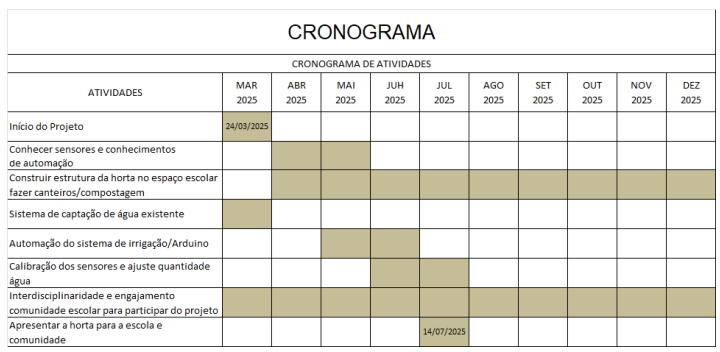

Horta Comunitária Inteligente: Alunos do 2º Ano B Desenvolvem Projeto com Arduino
Introdução
A sustentabilidade e o uso eficiente dos recursos naturais têm se tornado temas cada vez mais relevantes na sociedade contemporânea. A escassez de água e a necessidade de produção sustentável de alimentos impulsionam a busca por soluções inovadoras que aliam tecnologia e preservação ambiental. Nesse contexto, o projeto "Horta Comunitária Inteligente" propõe a criação de uma horta automatizada, utilizando sensores de umidade e Arduino para otimizar a irrigação, tornando o processo mais eficiente e sustentável. Além disso, a captação da água da chuva reforça a preocupação com o meio ambiente, reduzindo o desperdício de recursos hídricos.
Esse projeto tem um caráter interdisciplinar, envolvendo conhecimentos de Matemática, Robótica, Programação, Português, Biologia, entre outras áreas, permitindo que os alunos desenvolvam habilidades técnicas, científicas e comunicativas. A iniciativa busca não apenas proporcionar uma aprendizagem prática e significativa, mas também promover a conscientização ambiental e o trabalho em equipe, preparando os estudantes para desafios do mundo contemporâneo.
Além disso, o projeto contemplará toda a escola, promovendo a participação da comunidade escolar no cultivo e manutenção da horta. A produção será destinada tanto para a cozinha da escola, contribuindo para a alimentação dos alunos, quanto para moradores menos abastados do bairro, reforçando o impacto social e solidário da iniciativa.
Justificativa
A implementação desse projeto justifica-se pela necessidade de conscientizar os alunos sobre o uso sustentável dos recursos naturais e promover a aplicação prática dos conhecimentos adquiridos em sala de aula. Além disso, a utilização de tecnologia para automação da horta possibilita o desenvolvimento de habilidades técnicas e científicas, preparando os alunos para desafios do futuro.
A interdisciplinaridade fortalece o aprendizado e a conexão entre teoria e prática. O impacto social também é um fator relevante, pois a horta fornecerá alimentos para a cozinha da escola e ajudará famílias em situação de vulnerabilidade na comunidade.
Objetivos
- Desenvolver uma horta comunitária sustentável e automatizada;
- Ensinar conceitos básicos de automação e programação utilizando Arduino;
- Demonstrar a importância da preservação e do uso eficiente da água;
- Aplicar conhecimentos matemáticos na medição e controle da umidade do solo;
- Desenvolver a escrita técnica e argumentativa por meio de relatórios e registros do projeto;
- Estimular o trabalho em equipe e a resolução de problemas;
- Integrar a escola e a comunidade no cultivo e manutenção da horta;
- Destinar a produção para a alimentação escolar e apoio a moradores menos abastados.
Metodologia
A execução do projeto "Horta Comunitária Inteligente" será dividida em várias etapas para garantir sua efetividade. Inicialmente, os alunos realizarão pesquisas sobre hortas sustentáveis, automação e sensores de umidade, adquirindo embasamento teórico para a implementação do sistema. Em seguida, será construída a estrutura da horta dentro do espaço escolar, com a instalação de um sistema de captação de água da chuva, visando a sustentabilidade do projeto.
Com a estrutura montada, os alunos trabalharão na automação do sistema de irrigação, utilizando Arduino para programar sensores de umidade do solo. Quando detectada uma baixa umidade, o sistema acionará automaticamente a irrigação, garantindo que as plantas recebam a quantidade adequada de água. Durante essa etapa, serão realizados testes de funcionamento e ajustes necessários para garantir a eficiência do sistema.
A interdisciplinaridade será um elemento essencial do projeto. Na disciplina de Matemática, os alunos calcularão o volume de água coletado, a umidade do solo e a eficiência da irrigação. Em Educação Financeira, será analisado o custo-benefício da implementação da automação e a economia gerada pelo uso da água da chuva. Em Biologia, serão estudados os tipos de plantas adequadas ao cultivo, o impacto da umidade no desenvolvimento das espécies e as interações ecológicas dentro da horta. Em Robótica, aprenderão sobre a montagem e configuração dos sensores e atuadores. Em Programação, desenvolverão códigos para automação do sistema, enquanto em Português, produzirão relatórios técnicos e materiais explicativos sobre o funcionamento da horta e a importância da sustentabilidade.
Além da parte técnica, será promovido o engajamento da comunidade escolar. Professores, alunos e funcionários serão incentivados a participar do cultivo e manutenção da horta, fortalecendo o senso de coletividade. Serão realizadas palestras e atividades educativas sobre alimentação saudável e preservação ambiental.
Por fim, ao término do projeto, a horta será apresentada para a comunidade escolar em um evento de demonstração, onde os alunos explicarão seu funcionamento e os benefícios gerados. A produção será destinada à cozinha da escola, contribuindo para a alimentação dos alunos, e também para os moradores em situação de vulnerabilidade no bairro, promovendo um impacto social positivo.
Cronograma
O cronograma de atividades do projeto está representado na imagem abaixo, detalhando as etapas e os períodos de execução de cada fase:
Referências
- SOUZA, F. Automação com Arduino para iniciantes. Editora Ciência Moderna, 2020.
- SILVA, J. Sustentabilidade e reaproveitamento de água. Editora Ambiental, 2019.
- MANZANO, J. L. Matemática aplicada à tecnologia. Editora Educacional, 2021.
Projeto orientado pelo professor Alcione Turatto, com participação dos alunos do 2º Ano B do Colégio Estadual Alto da Glória.